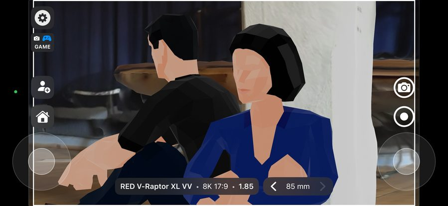
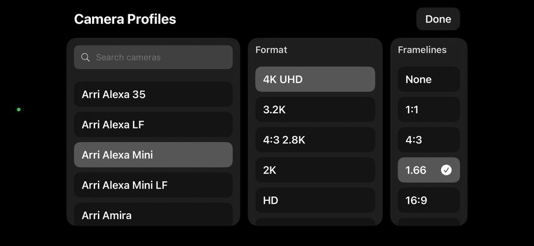
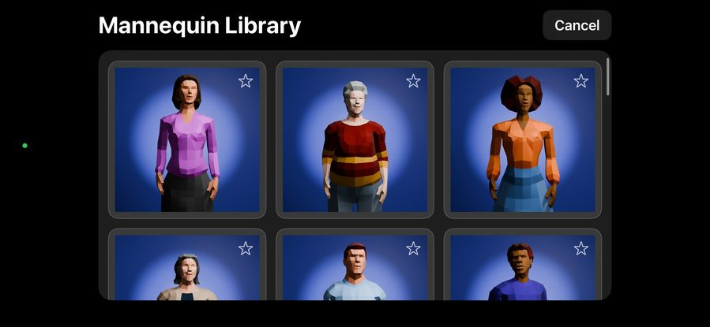

New · Viewfinder
A director's viewfinder.
Your iPhone's own cameras — ultra-wide included — show exactly what your cine camera and lens will see, with framelines, on any recce. No scan needed.
Scan your location, frame it with your real camera and lenses, see true-to-life depth of field and where the sun will be, and block your scene — all before the crew arrives.



Switch at any moment — your camera, lens, scene and sun go with you.
Your iPhone's own cameras — ultra-wide included — show exactly what your cine camera and lens will see, with framelines, on any recce. No scan needed.
Clip: AR mode walking through a splat location with DOF onPlace a scanned location around you at 1:1 scale, anywhere. Walk it with your camera rig in hand and block real actors inside it.
Steer a virtual camera with joysticks through any location from your sofa — perfect for prep days, pitches and remote scouting.
Scan during the recce with CineStager's built-in LiDAR scanner. Choose a precise LiDAR model, photoreal Gaussian splats, or Hybrid: the LiDAR model up close, and splats for everything beyond the scanner's reach — the street outside the window, the far end of the warehouse.
Prefer your own tools? Import any USDZ — even a set that only exists in Blender, SketchUp or Unreal — or a splat .ply.
Train on Mac. Send a scan to CinePlanner for Mac through iCloud and get finished splats back in minutes instead of a quarter of an hour — while your iPhone stays cool.
Every scan lands in your Location Library — cropped, oriented and ready. Mark a building's storeys once and switch floors with a tap. Set north and the place on earth, and the sun follows.
Pick the exact body and sensor mode you're shooting — down to open gate and crop modes — and the lens set you're renting. CineStager draws the true field of view, with framelines and anamorphic squeeze.

Screenshot: new lens settings / lens set pickerFocal length, stop, sensor and the real distances in your location give a true-to-life depth of field — in Game mode on any device, and in AR from the LiDAR scanner's depth. Tested side by side against a real cinema camera.
Focus on a mannequin and it stays sharp, wherever you move it.
One lens button adds the look of the glass: vintage vignette and softness, swirly bokeh, soap-bubble highlights and the stretch of an anamorphic. See how that 1970s set renders your location before you book it.
Sunseeker draws the sun's path over your shot for any date and time. In AR and Viewfinder it works anywhere, straight away — tap the real sun to set north exactly. In Game mode it follows your scanned location. Find the golden-hour window, the backlight, the moment the shadow leaves the doorway.
Pick a date and time once; every mode keeps it.

Screenshot: new mannequins — 8 people, 5 poses, colour pickerEight people in five poses — standing, walking, sitting, on the ground and lying — each with their own skin, hair, top and bottom colours. Set their height, place them on the right floor, and switch poses without losing their mark.
In AR, people occlusion lets you block real actors inside the virtual location.
Every capture keeps what you set up — camera, lens, stop, positions — and arrives with a map your gaffer, AD and DP can read.
In Viewfinder mode, save an Apple ProRAW DNG with every photo. The Shot Library gives it a cinematic film look: fine-tune exposure, white balance and tint, add 8, 16 or 35 mm grain — then share the photo, the film-look JPEG or the original DNG.
 Screenshot: a video map with the camera's path
Screenshot: a video map with the camera's pathEach still saves a top-down map with the camera and every person on it. Videos get one too, with the camera's route and how people moved. Shot something without a location — even in Viewfinder mode? Link one afterwards in the Shot Library.
Walk the location with your exact camera and lens set in your pocket, and capture frames for the director on the spot.
Compare a 25 mm and a 50 mm, spherical and anamorphic, wide open and stopped down — in the real space.
Schedule exteriors for the light you want and know which side of the street will be in shade at call time.
Show the client the frames, the blocking and the look before the shoot day — not a mood board.
Scan once. Test endlessly from the production office, without going back to ask "will this shot work?"
Hand out stills with maps so gaffer, grip and AD know every setup before day one.
Download CineStager and use every feature for a week — scanning, all three modes, every camera and lens.
Unlock CineStager for good with a single purchase. No subscription, no account. Your Shot Library always stays open, even if you don't buy.
CineStager runs on iPhone and iPad with iOS 18.6 or later. Some features use specific hardware:
| Feature | Needs |
|---|---|
| Viewfinder, AR, Game mode, Sunseeker, mannequins | Any supported iPhone or iPad (AR with a scanned location works best with LiDAR) |
| LiDAR scanning, depth of field in AR | An iPhone Pro or iPad Pro with LiDAR |
| Gaussian splats & Hybrid | LiDAR, iOS 27, and an A14 / M1 chip or newer |
| ProRAW with film look | An iPhone Pro, in Viewfinder mode |
| Ultra-wide lenses | Viewfinder mode (AR uses the main camera only) |
Built by a cinematographer, for filmmakers. Try every feature free for 7 days.